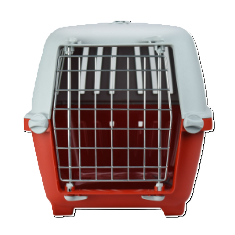
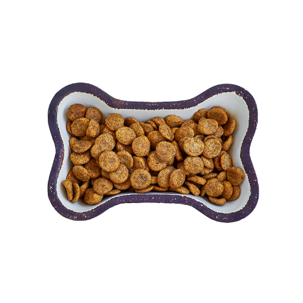
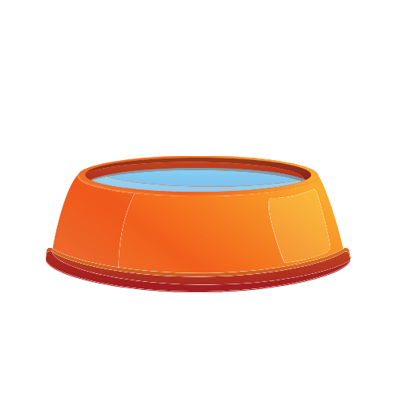

La identificacion de tu mascota lleva su nombre y la forma para contactarte.
Si tu mascota no lleva no lleva identificacion y se pierde las concecuencias podrian sr fatales.
La mascota debe llevarlo puesto todo el tiempo incluso estando en casa
Es muy importante utilizarla cuando llevas a tu mascota de un lugar a otro,
pues contribuye a tu seguridad y la de tu mascota
La comida de t perro es fundamental, pues influye en su salud, estado de animo y apariencia fisica
Invierte en comida y premios de calidad, dale de comer de dos a tres veces al dia en horarios especificos.
Existen recipientes de todos los gustos.Elige recipientes duraderos de metal o ceramica en vez de plasticos